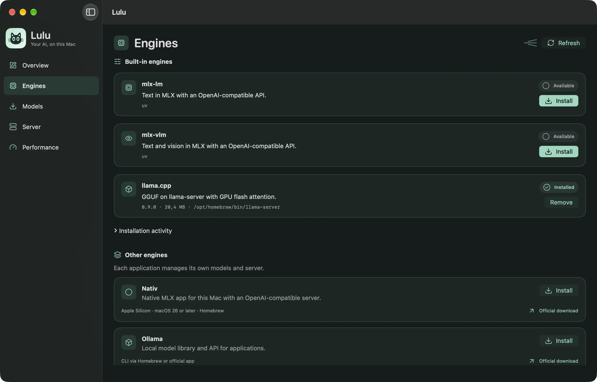
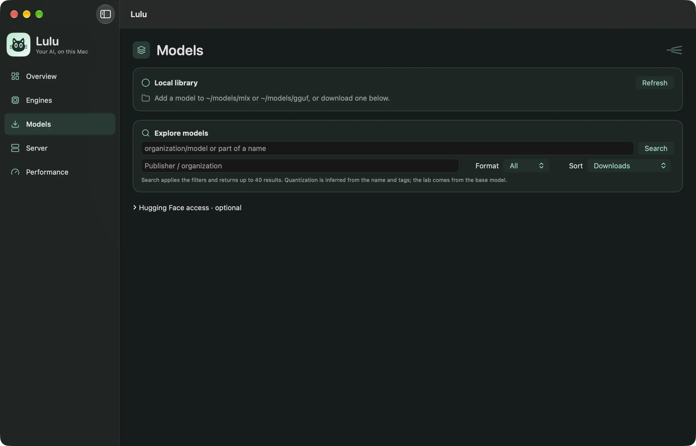
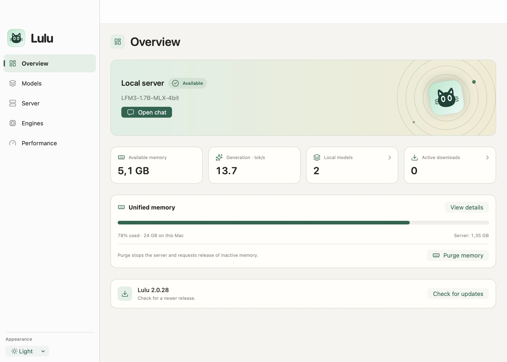

Getting started · Lulu
Install an engine
In Engines, choose an engine that fits your Mac and model format.

Track the installation in Lulu.
Getting started · Lulu
Get a model
In Models, pick a recommendation or search for a model to download.

Choose a model format your engine supports.
Getting started · Lulu
Start your server
In Server, choose your model and set the context length and port.

The default endpoint is 127.0.0.1:8000/v1
Getting started · Lulu
Open a local chat
With your model running, select Open chat to start a conversation.

The model runs on your Mac.